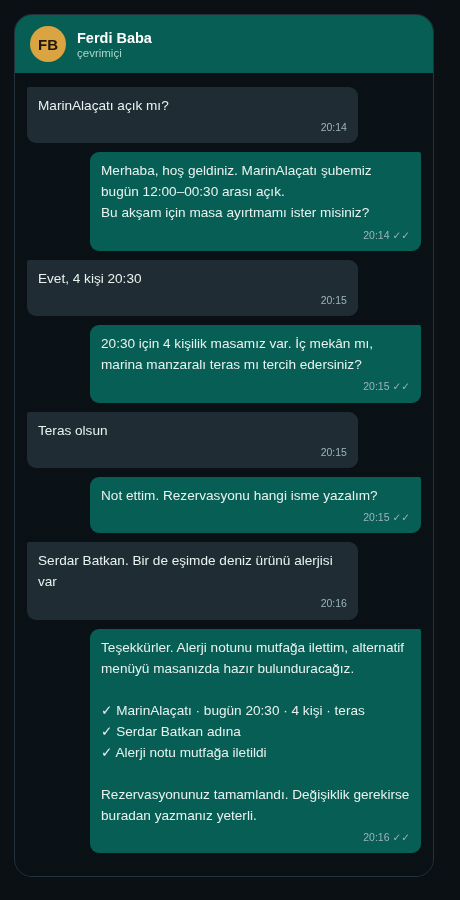
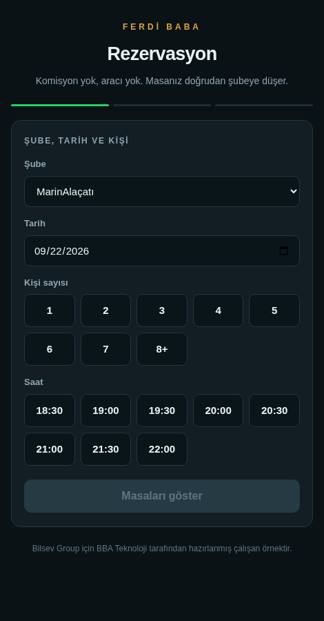
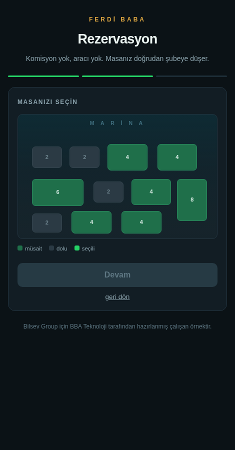
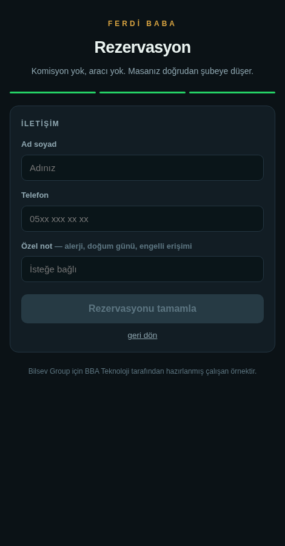
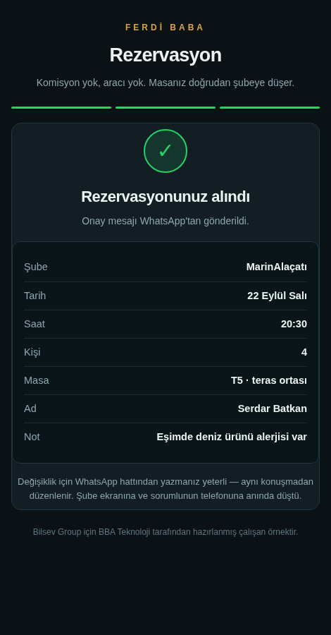
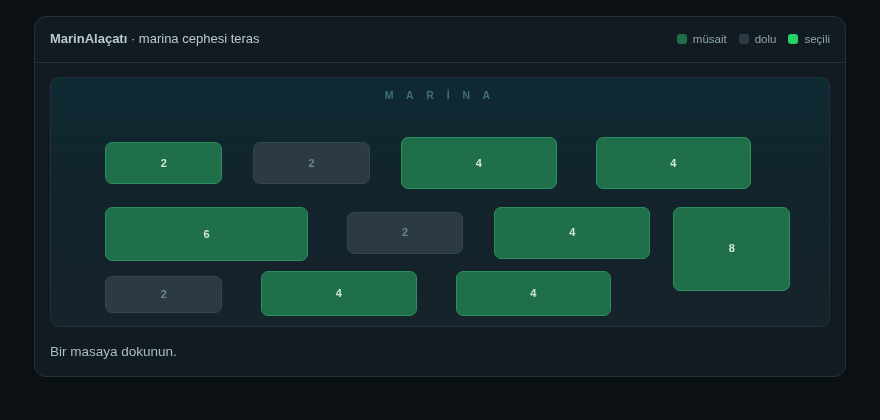
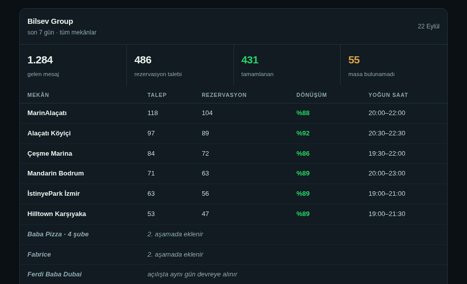

Ferdi Baba'nın misafir kanallarını dışarıdan inceledik — bir misafirin göreceği kadarıyla. Bulduklarımız ve aynı akışın nasıl sonuçlanabileceği bu dokümanda.
Alaçatı ve Urla'da otel ve restoranlarda kurulumlarımız var; misafir iletişimi ve rezervasyon tarafında çalışıyoruz.
Bu tespitler dışarıdan, herhangi bir misafirin görebileceği şekilde yapıldı. İç veri kullanılmadı.
Misafir yine “MarinAlaçatı açık mı?” diye yazıyor. Bu kez saat söyleniyor, masa durumu kontrol ediliyor, tercih alınıyor ve rezervasyon hattın içinde tamamlanıyor. Özel not mutfağa iletiliyor, kayıt ilgili şubeye anında düşüyor.

Aynı asistan Instagram mesajlarını ve web sitesinden gelen soruları da karşılıyor. Mevcut numaralarınız değişmiyor.
Misafir şubeyi, tarihi ve kişi sayısını seçiyor; masasını planda işaretliyor; rezervasyonu bitiriyor. Komisyon yok, aracı platform yok — ve kayıt sizde kalıyor.





Rezervasyon sayfası her kullanıldığında bir kayıt oluşuyor: hangi şube, hangi saat, kaç kişi, hangi tercih. Kimse fazladan iş yapmıyor — ama bir sezon sonunda grubun elinde kendi misafir verisi birikmiş oluyor. Bugün bu bilgi telefonda konuşulup kayboluyor.
Grup düzeyinde tek panel: hangi mekân kaç talep aldı, kaçını rezervasyona çevirdi, hangi saatte masa bulunamadı. Aynı ölçü, aynı tabloda.

On bir mekân ve iki mağaza tek altyapıda birleşiyor — misafirin girdiği kapıdan yönetimin baktığı ekrana kadar.
Bu dokümandaki ekranların hepsi çalışıyor. Aşağıdaki adreste rezervasyon sayfasını ve masa planını kendiniz kullanabilirsiniz — sonuna kadar gider.
MarinAlaçatı için hazırlandı. Şubeyi seçin, masanızı planda işaretleyin, rezervasyonu tamamlayın. Kurulum sonrası misafirlerinizin göreceği akışın aynısı.
Beğenirseniz kısa bir görüşmede grubun tamamı için nasıl kurulacağını anlatayım — altı şube, Baba Pizza, Fabrice ve Dubai açılışı dahil. Yatırım ve takvim o görüşmede netleşir.